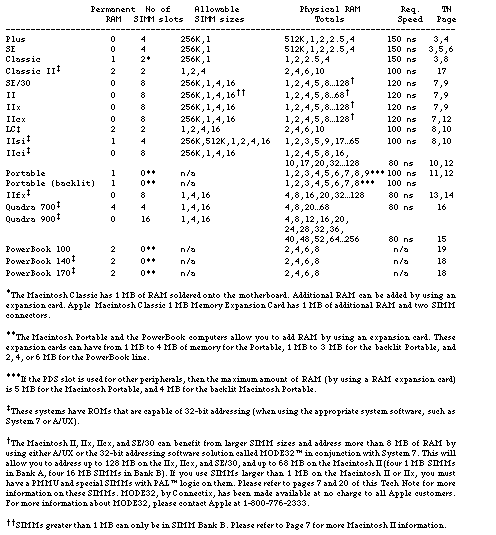
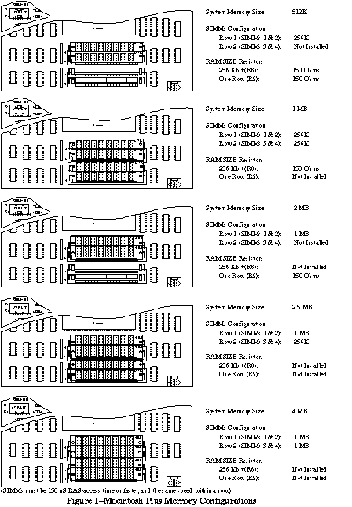
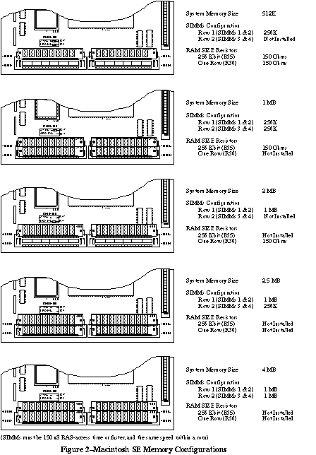
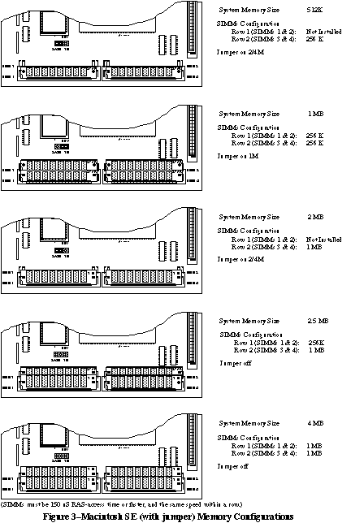
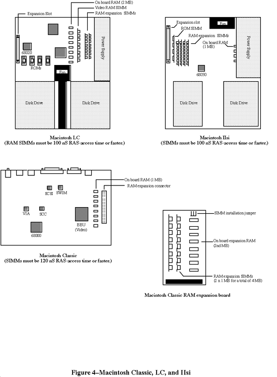
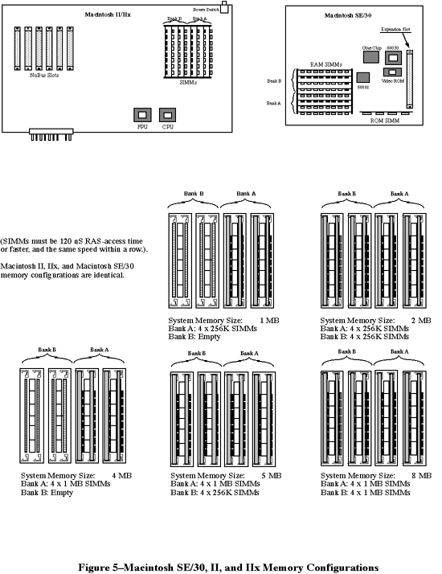
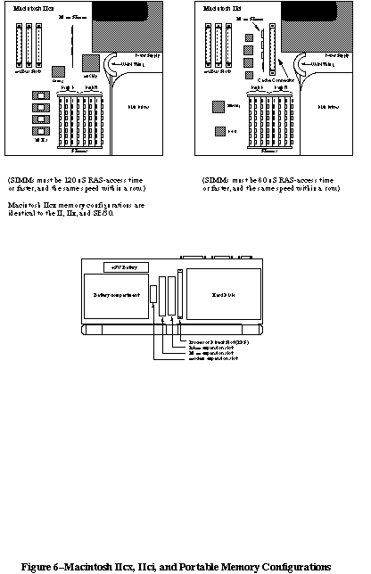
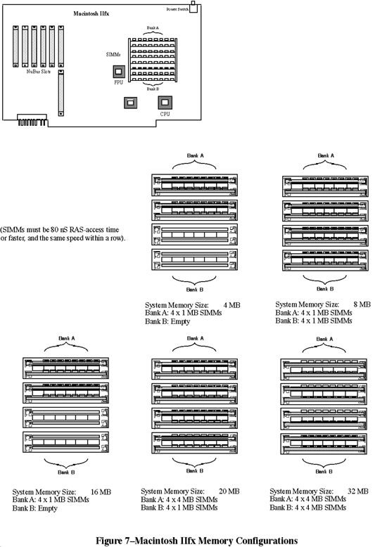

Legacy Document
Important: This document is part of the Legacy section of the ADC Reference Library. This information should not be used for new development.
Current information on this Reference Library topic can be found here:
ADC Home > Reference Library > Technical Notes > Legacy Documents > Hardware & Drivers >
Important: This document is part of the Legacy section of the ADC Reference Library. This information should not be used for new development.
Current information on this Reference Library topic can be found here:
|
RAM Configuration Chart

Macintosh PlusThe Macintosh Plus has the following possible configurations (see Figure 1): 512K, using two 256 Kbit SIMMs 1 MB, using four 256 Kbit SIMMs 2 MB, using two 1 Mbit SIMMs 2.5 MB, using two 1 Mbit SIMMs and two 256 Kbit SIMMs 4 MB, using four 1 Mbit SIMMs It is important to place the SIMMs in the correct location when using a combination of SIMM sizes, as in the 2.5 MB example, and to make sure the right resistors are cut. Refer to Figure 1 for the correct location of the SIMMs and size resistors. Macintosh SEThe Macintosh SE configurations (the original motherboard as well as the revised motherboard with a memory jumper selector) are the same as the Macintosh Plus, except physical locations on the motherboard are different. In addition, memory configurations with only two SIMMs (for example, 512K and 2 MB) use slots 3 and 4 on the revised SE motherboard instead of slots 1 and 2 like the original motherboard and Macintosh Plus. Refer to Figures 2 and 3 for the correct locations and settings. Macintosh ClassicThe Macintosh Classic has the following possible configurations (see Figure 4): 1 MB, using eight 128 Kbit DRAMs soldered to the motherboard 2 MB, using the memory expansion card and setting the jumper to "SIMM NOT INSTALLED" 2.5 MB, using two 256 Kbit SIMMs on the memory expansion card and setting the jumper to "SIMM INSTALLED" 4 MB, using two 1 Mbit SIMMs on the memory expansion card and setting the jumper to "SIMM INSTALLED" When adding SIMMs to the memory expansion card, use either two 256 Kbit or two 1 Mbit parts rated at 120 ns or faster.    Macintosh SE/30, II, IIx, and IIcxSince these machines use a 32-bit data bus with eight-bit SIMMs, you must always upgrade memory in four SIMM chunks. The eight SIMM connectors are divided into two banks of four SIMM slots, Bank A and Bank B. On the Macintosh SE/30, Bank A is located next to the ROM SIMM while Bank B is next to the 68882 coprocessor. On the Macintosh II and IIx, Bank A is the bank closest to the edge of the board, while on the Macintosh IIcx, Bank A is the bank closest to the disk drives and power supply. Refer to Figure 5 for the proper locations of Banks A and B on the SE/30, II, and IIx, and refer to Figure 6 for the proper locations on the IIcx. Unlike the Macintosh Plus and the Macintosh SE, the Macintosh II and IIx have no resistors to cut and no jumpers to set; you need only install the SIMMS in the correct banks and you'll be up and running. You can implement the following configurations: 1 MB, using four 256 Kbit SIMMs in Bank A 2 MB, using eight 256 Kbit SIMMs in Banks A and B 4 MB, using four 1 Mbit SIMMs in Bank A 5 MB, using four 1 Mbit SIMMs in Bank A and four 256 Kbit SIMMs in Bank B 8 MB, using eight 1 Mbit SIMMs in Banks A and B >8 MB: see the 32-bit addressing information below Again, it is important to make sure the right size SIMMs are in the right Bank; when you are using a combination of SIMMs, the larger SIMMs (in terms of Mbits) must typically be in Bank A (see the exception below). When you are using only four SIMMs, they must be in Bank A as well. 32-Bit Addressing With the Macintosh SE/30, II, IIx, and IIcxThe Macintosh SE/30, II, IIx, and IIcx ROMs are not capable of 32-bit addressing. These models can overcome this limitation, however, by using the appropriate system software. A/UX is a 32-bit operating system, as is System 7 when used in conjunction with MODE32 or when used on a Macintosh with 32-bit clean ROMs. To have more than 8 MB of RAM in a Macintosh II or IIx, special 120 ns PAL SIMMs are required. These SIMMs incorporate PAL logic chips that overcome problems caused by the refresh logic on the Macintosh II and IIx. In addition, a PMMU is required on the Macintosh II. Please refer to the end of this Note ("4 MBit DRAMs in Revolt") for more information on this subject. Due to an undocumented feature in the ROM firmware shipped with the original Macintosh II, a Macintosh II with original ROMs is limited to using SIMMs no larger than 1 MB in Bank A. Large SIMMs can only be put in Bank B (that is, 4 and 16 MB SIMMs). Remember that if Bank B is to be used at all, Bank A must be populated first. As a result of this limitation, the largest memory configuration on an unmodified Macintosh II using 1 MB SIMMs in Bank A and 4 MB SIMMs in Bank B is 20 MB. This problem is avoided if you've installed the SuperDrive upgrade kit, which includes a set of Macintosh IIx ROMs. The Macintosh IIx ROMs can handle 4 MB SIMMs, and expect the presence of a SWIM chip in place of the old IWM. The theoretical maximum memory that a Macintosh SE/30, IIx, IIcx (and II with IIx ROMs) can address is 128 MB using 16 MB SIMMs. Please remember that the use of large SIMM sizes with the Macintosh hardware line has not yet been tested thoroughly. It is mentioned here for your consideration and should be considered theoretical until we have been able to further test all of these possible configurations.   Macintosh LCThe Macintosh LC uses a 16-bit data bus with 8-bit SIMMs, so upgrades must always be performed two SIMMs at a time. The LC has two SIMM connectors that are used as a single additional RAM bank (see Figure 4) in addition to the 2 MB already soldered to the motherboard. The following memory configurations can be implemented by installing SIMM pairs in this additional bank: 2 MB, using four 1 Mbit x 4 DRAMs soldered to the motherboard 4 MB, using two 1 Mbit SIMMs in the SIMM connectors 6 MB, using two 2 Mbit SIMMs in the SIMM connectors 10 MB, using two 4 Mbit SIMMs in the SIMM connectors The Macintosh LC requires 100 ns or faster SIMMs. Macintosh IIsiThe Macintosh IIsi is similar to the SE/30, II, IIx, and IIcx in that it uses a 32-bit data bus with 8-bit SIMMs; you must always upgrade memory in four SIMM chunks. The IIsi differs in that it only has one SIMM bank instead of two (see Figure 4). If future 16 Mbit DRAMs are compatible with the current refresh frequency, then the IIsi will support 16 Mbit SIMMs, enabling a RAM configuration of 65 MB (4 x 16 MB + 1 MB). The IIsi requires 100 ns or faster SIMMs. Macintosh IIciThe Macintosh IIci motherboard layout is somewhat different from the IIcx, but the location of the RAM SIMMs is unchanged. Bank A is still the bank closest to the disk drives. Refer to Figure 6 for the proper locations of Banks A and B on the IIci. The IIci has a much improved RAM interface and allows a great deal more freedom when installing SIMMs. Banks A and B are interchangeable, meaning that when mixing two sizes of RAM, the larger SIMMs do not necessarily have to go in Bank A. In fact, for best performance when using on-board video, Apple recommends that the smaller SIMMs be installed in Bank A. Note, however, that if on-board video is used, then RAM must be present in Bank A. The IIci requires that SIMMs be 80 ns time or faster and the same speed within a row. You can implement the following memory configurations with 256K and 1 MB SIMMs: 1 MB using four 256 Kbit SIMMs in Bank A or in Bank B 2 MB using eight 256 Kbit SIMMs in Banks A and B 4 MB using four 1 Mbit SIMMs in Bank A or in Bank B 5 MB using four 256 Kbit SIMMs in Bank A and four 1 Mbit SIMMs in Bank B 5 MB using four 1 MBit SIMMs in Bank A and four 256 Kbit SIMMs in Bank A 8 MB using eight 1 Mbit SIMMs in Banks A and B The 1 MB and 4 MB configurations using only Bank B are not compatible with on-board video, since Bank A must contain memory when using on-board video. The first 5 MB configuration (with 256 Kbit SIMMs in Bank A) is recommended for 5 MB configurations using on-board video. Parity RAMSome specially ordered versions of the Macintosh IIci are equipped with a PGC chip and support parity for RAM error detection. These machines require parity RAM. SIMMs for these machines are nine bits wide instead of eight, so there is generally an extra RAM IC on the SIMM. There is no difference in the installation of 256K x 9 or 1M x 9 SIMMs. Macintosh PortableMemory expansion on the Macintosh Portable is different from other members of the Macintosh family since the Portable uses memory expansion cards in place of SIMMs. The base Portable is equipped with 1 MB of RAM on the motherboard and has one RAM expansion card slot. Apple currently supplies a 1 MB memory expansion kit that takes the Portable to 2 MB total. Apple and third-party developers may produce higher-capacity expansion boards (2 MB to 8 MB) in the future. Since the Portable has only one RAM expansion slot, you may use only one memory expansion board at a time. This limit means that a 1 MB expansion board would have to be completely replaced by a higher-capacity board when it became available. Total RAM for the Portable will always be 1 MB plus the size of your one RAM expansion board (if installed). Refer to Figure 6 for the location of the RAM expansion slot.  Macintosh IIfxThe Macintosh IIfx motherboard layout has its SIMMs located in the same general area as the IIx, but they are oriented transversely. Bank A is the bank closest to the rear of the machine; bank B is closest to the main processor. Refer to Figure 7 for the proper memory bank locations. The IIfx has a RAM SIMM interface similar to that of the IIcx, et al.: when you are using a combination of SIMMs, the larger SIMMs (in terms of Mbits) must be in Bank A. When you are using only four SIMMs, they must be in Bank A as well. The description in the Guide to the Macintosh Family Hardware, Second Edition inaccurately states the larger SIMMs can be placed in either bank. The IIfx requires that SIMMs be 80 ns RAS-access time or faster and the same speed within a row. You can implement the following memory configurations with 1 and 4 MB SIMMs (256K address-depth SIMMs are not supported): 4 MB using four 1 Mbit SIMMs in Bank A 8 MB using eight 1 Mbit SIMMs in Banks A and B 16 MB using four 4 Mbit SIMMs in Bank A 20 MB using four 4 Mbit SIMMs in Banks A and four 1 Mbit SIMMs in Bank B 32 MB using eight 4 Mbit SIMMs in Banks A and B Parity RAMParity RAM requirements are as follows: if using 1 MB or 4 MB SIMMs, the RAM speed must be 60 ns. However, the parity circuit programmable array that goes on the motherboard as well as the parity PALs that go on the SIMMs are proprietary to Apple--their equations are not expected to be released to developers. Because of this proprietary design, Apple does not recommend third-party development of parity products. The IIfx has 64-pin SIMMs, which are different from previous Macintosh models. Developers can request mechanical drawings and electrical specifications of the IIfx RAM SIMM modules from DTS. Please send the request with a mailing address and include the words "IIfx SIMM information request" in the title of the electronic mail request or letter to facilitate handling.
 Click here for part 2 of the Macintosh Memory Configurations Technote. Downloadables
|
|